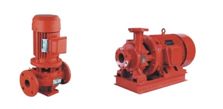

01
Fire pump packages
Electric and diesel-driven pump package enquiries, controller coordination, accessories and project documentation review.
We help distributors, MEP contractors and industrial buyers identify the right pump package, verify the document set and coordinate a practical export route.

The right first step is not a generic catalogue. It is a clear duty, project requirement and responsibility split.
Electric and diesel-driven pump package enquiries, controller coordination, accessories and project documentation review.
Support for pressure-maintenance and booster applications where the flow, head, frequency and installation conditions are defined.
Model comparison, spare-parts questions and alternative supply checks for distributors and maintenance partners.
We keep technical responsibility visible: the local buyer or project engineer confirms the duty and approval path; the manufacturer confirms the exact model and evidence.
The public site uses a neutral product brief and a model-specific review path. Original source documents remain internal; public claims do not imply that Soar is the manufacturer or that every model carries every approval.
A buyer-facing guide distilled from the supplied selection material: package types, duty inputs, document pack and quotation checklist.
Read the technical guide →Every enquiry records flow, head, frequency, voltage, driver, duty arrangement and destination requirements before quotation.
Send project details →Browse fire-pump, sewage-pump, multistage, self-priming, water-supply-set and control-cabinet families before sending a duty point.
Open the product catalog →Review the supplied ISO, GB6245 and NFPA 20 references, with certificate holder, validity and model coverage left open until original documents are checked.
Review certification evidence →The first three entries describe application paths. The final two are SIMULATED DATA — FOR SALES TRAINING ONLY, constructed from the product families and selection fields in the supplied technical material; they are not real customers, orders or completed projects.
Start with the required flow, pressure, duty / standby arrangement, driver, controller, project standard and authority expectations. Confirm the local installer and commissioning responsibility before pricing.
Compare the existing nameplate, curve, connection dimensions, frequency and site conditions. A replacement is only valid when the duty and installation interface match.
Define the installed base, fast-moving wear parts, lead-time requirement and warranty process. The buyer should confirm which parts they are authorized and equipped to service.
Illustrative brief: new commercial-building fire protection package; electric duty pump plus standby arrangement; buyer provides flow, head, voltage, frequency, controller and AHJ requirements. No company name, project award, price or delivery result is asserted.
Illustrative brief: replacement and replenishment programme for vertical and end-suction fire-pump families; buyer provides nameplate, duty point, connection dimensions, quantity and spare-parts list. This is a training scenario, not a completed customer case.
A pump cannot be selected from horsepower alone. Share the minimum information available and we will identify what is still missing.
| Application | Fire protection, pressure maintenance, booster, replacement or other defined use |
|---|---|
| Hydraulic duty | Required flow rate, head / pressure, suction conditions and duty / standby arrangement |
| Electrical | Voltage, phase, frequency, starting method and local electrical requirements |
| Driver | Electric motor, diesel engine or package requirement |
| Documentation | Project standard, authority / AHJ expectation, NFPA 20 reference, UL/FM or other model-specific requirement |
| Commercial | Quantity, destination, target delivery window, Incoterm and whether this is a replacement or new project |
Send the duty point or project brief. The form prepares an email to our designated mailbox; an online API endpoint can be enabled in site.js before launch.
No certification, approval, performance or delivery claim is made until the exact model, project location and document scope have been reviewed.
No. Flow, head, frequency, voltage, driver and installation conditions are required to avoid quoting an unsuitable pump.
No. Certification and project approval are model- and project-specific. The exact certificate scope, authority expectation and responsibility split must be confirmed before a claim is made.
We coordinate with the buyer and qualified local parties. Installation, commissioning, authority approval and site responsibility must be assigned in the commercial scope.
Yes, if the current model, duty point, dimensions, connections and site conditions are available. Photos and the existing nameplate are useful starting evidence.